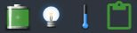

Упарадкуйце вашы справы з дапамогай віртуальных працоўных сталоў
Віртуальныя працоўныя сталы дазваляюць групаваць праграмы, якія выкарыстоўваюцца для розных спраў, па розных працоўных сталах.
Спачатку ў вас ёсць чатыры віртуальных працоўных стала, але іх колькасць можна змяняць.
Гаджэт Пэйджар на паліцы працоўнага стала адлюстроўвае мініяцюры віртуальных працоўных сталоў з праграмамі, якія на іх выконваюцца.
Ёсць некалькі спосабаў пераключэння паміж віртуальнымі працоўнымі сталамі.
- З дапамогай гаджета Пэйджар: націсніце на мініяцюру працоўнага стала, з якім вы жадаеце працаваць.
- Спалучэннямі клавіш: Ctrl+Alt + <Стрэлка> у пажаданым кірунку.
- Праз меню: Галоўнае меню → Працоўны стол → Віртуальныя (толькі пры загружаным модулі Classic Menu!).

Увесь працоўны стол — гэта меню
Націсканне левай кнопкай мышы на свабоднай прасторы працоўнага стала выклікае
Галоўнае меню, з якога можна запускаць праграмы, мяняць налады,
выключаць сістэму і гэтак далей. Гэта — стандартная
паводзіна Bodhi адразу пасля ўсталявання. Большасць карыстальнікаў
лічыць гэта вельмі зручным. Астатнія могуць адмяніць ці змяніць прызначэнне мышы
«Паказаць галоўнае меню» праз Галоўнае меню → Налады →
Панэль наладаў → Увод → Прызначэнні мышы. Там жа можна наладзіць
прызначэнні да іншых дзеянняў мышы.
Націсканне правай кнопкай мышы на свабоднай прасторы працоўнага стала выклікае
меню Абраныя праграмы. Адразу пасля ўсталявання Bodhi у ім нічога няма.
Дадаць праграмы ў гэта меню можна праз Галоўнае меню → Налады → Панэль наладаў →
Праграмы → Абраныя праграмы.

Шматлікія гаджэты паказваюць звесткі аб сістэме
Гаджэты (значкі на працоўным стале і яго паліцы) выконваюць розныя функцыі. Многія паказваюць звесткі аб сістэме, такія як узровень зарада батарэі, бягучы час або частату працы працэсара. Іншыя дазваляюць узаемадзейнічаць з сістэмай розным чынам, напрыклад рэгуляваць моц гуку ці яркасць экрану. Большасць гаджэтаў можна змяшчаць адразу і на працоўны стол, і на яго паліцу.
Гаджэты можна адшукаць і размясціць на працоўным стале праз
Галоўнае меню → Налады → Гаджэты.

Наяўнасць гаджэтаў залежыць ад модуляў
Гаджэт прысутнічае ў сістэме толькі ў тым выпадку, калі ў ёй загружаны адпаведны модуль. Іншымі словамі, гаджэт — гэта асобнік модуля. Каб загрузіць ці выгрузіць модулі,
звярніцеся да Галоўнае меню → Налады → Модулі. Bodhi пастаўляецца з багатым наборам модуляў у дыстрыбутыве. Дадатковыя модулі можна ўсталяваць праз Цэнтр праграм
або з дапамогай менеджара пакетаў Synaptic ці выкарыстоўваючы камандны радок.
Паліцы — гэта пляцоўкі для панэлі задач, паведамленняў ды гаджэтаў
Працоўны стол Moksha выкарыстоўвае паліцы каб размяшчаць на іх гаджэты ды значкі праграм.
Так больш зручна, чым непасрэдна на працоўным стале (большасць гаджэтаў можна дадаць на паліцы).
Паліцы можна размяшчаць уздоўж любых межаў працоўнага стала. Можна стварыць некалькі паліц на адным працоўным стале,
а можна мець розныя паліцы на розных віртуальных працоўных сталах.
Кіраваць колькасцю паліц і іх размяшчэннем, памерам ды іншымі атрыбутамі можна праз
Галоўнае меню → Налады → Паліцы. Каб кіраваць змесцівам паліцы (яе гаджэтамі),
трэба націснуць правай кнопкай мышы на паліцы і выбраць
Shelf → Змест.


Згортванне замест мінімізацыі
Жадаеце прыняць акно далей з вачэй, але не хочаце яго мінімізаваць на панэль задач?
Тады згарніце яго! Націсніце двойчы на загаловак акна левай кнопкай мышы —
і яно «згорнецца ўверх». Зноў націсніце двойчы на загаловак —
і акно «разгорнецца ўніз».
На здымку экрана паказаны два асобніка Terminology, адзін згорнуты, а другі — не.
Terminology — гэта ўсталяваны ў Bodhi тэрмінал.
Некаторыя зручныя прызначэнні
Асяроддзе Moksha дазваляе прызначаць сістэмныя падзеі некаторым дзеянням, напрыклад націсканню кнопкай мышы на край экрана, націску спалучэння клавіш або камбінацыі клавішы з націсканнем кнопкі мышы. Прызначэнні класіфікуюцца так:
- Прызначэнні да краёў экрана;
- Прызначэнні клавіш;
- Прызначэнні мышы;
- Прызначэнні ACPI (падзеі ў сістэме).
Вы можаце наладзіць асабістыя прызначэнні, але многія ўжо перадвызначаны. Сярод іх:
Alt+<Левая кнопка мышы>
дазваляе ўхапіць акно за любую яго частку, каб перасоўваць
<Левая кнопка мышы>
на свабоднай прасторы працоўнага стала выклікае Галоўнае меню
<Правая кнопка мышы>
на свабоднай прасторы працоўнага стала выклікае меню Абраныя праграмы
Ctrl+Alt+X
закрывае акно
Ctrl+Alt+<Стрэлка>
пераключае да віртуальнага працоўнага стала ў дадзеным напрамку
Ctrl+Alt+M
выклікае Галоўнае меню
Shift+F10
расцягвае акно па вертыкалі
Alt+Shift+F10
расцягвае акно па гарызанталі
Alt+Tab
пераключае вокны на працоўным стале
Усе прызначэнні можна адшукаць ды наладзіць праз
Галоўнае меню → Налады → Панэль наладаў → Увод → Прызначэнні клавіш / мышы / ACPI / да краёў.
Больш звестак пра прызначэнні і спіс перадвызначаных прызначэнняў вы можаце пабачыць у нашай дакументацыі Wiki.


{kind=link}